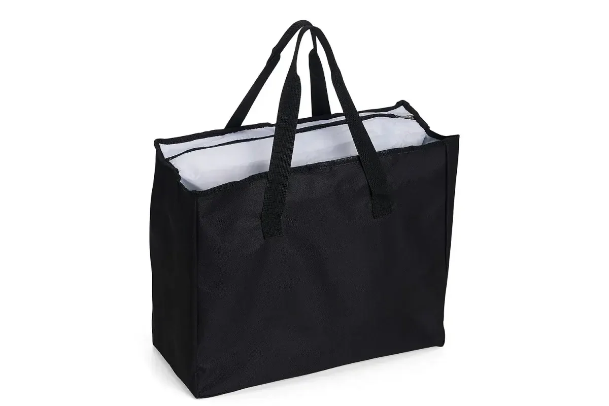

Brinde de fim de ano tem um problema que brinde de evento não tem: todo mundo pede ao mesmo tempo. Em novembro as fábricas lotam, o prazo aperta, e quem deixou para depois acaba escolhendo o que tem pronto, não o que queria dar. Este guia mostra o que costuma funcionar, quanto investir e, principalmente, até quando fechar o pedido para receber antes do Natal.
Por que um item útil vence a cesta e a agenda
Cesta acaba em uma semana. Agenda vai para a gaveta em fevereiro. Uma bolsa ou uma necessaire bem-feita continua sendo usada ao longo do ano, e cada uso lembra quem deu. Por isso empresas que repetem o brinde todo ano tendem a migrar para peças de uso diário, com a marca aplicada de forma discreta.
Se você quer o passo a passo para escolher pelo perfil de quem recebe, veja também como escolher brindes para clientes.
Ideias por público
- Clientes principais: tote bag em sarja ou lona, com bordado ou silk discreto. Tem cara de presente e acompanha o cliente no dia a dia;
- Equipe interna: mochila ou bolsa térmica, que o colaborador usa no trajeto e no trabalho;
- Parceiros e fornecedores: necessaire ou pochete, peças menores e com bom custo em volume;
- Base grande de clientes: ecobag, com o menor custo por peça e muita área para a marca.
A bolsa como embalagem do presente
Uma solução que funciona muito bem é usar a própria bolsa como embalagem. Em vez de caixa, o kit vai dentro de uma tote ou de uma bolsa térmica personalizada: o conteúdo é consumido, e a bolsa fica. A tote térmica, por exemplo, recebe bem vinho, panetone e itens de mesa, e depois vira bolsa de mercado ou de piquenique.
Quanto investir
O valor depende do tecido, do tamanho, da técnica de estampa e da quantidade. Como referência, alguns pedidos reais que orçamos em 2026:
| Peça | Lote | Valor por peça |
|---|---|---|
| Tote bag em lonita, com silk | 100 peças | cerca de R$ 45 |
| Tote bag em sarja crua, com silk | 100 peças | cerca de R$ 65 |
| Ecobag em nylon, silk de duas cores | 1.000 peças | cerca de R$ 25 |
Em lotes maiores o valor por peça cai, porque a preparação se divide por mais unidades. Para chegar a uma faixa antes de pedir proposta, use a calculadora de orçamento para brindes.
O prazo: quando fechar para receber antes do Natal
É o ponto que mais derruba brinde de fim de ano. A conta é feita de trás para frente:
- Entrega: para distribuir antes das festas, o ideal é receber na primeira quinzena de dezembro;
- Produção: até 25 dias úteis depois da aprovação da peça-piloto. Os feriados de novembro alongam o calendário;
- Peça-piloto: até 15 dias para produzir e você aprovar;
- Arte e modelo: alguns dias de ajuste antes de tudo começar.
Somando tudo: para receber na primeira quinzena de dezembro, a peça-piloto precisa estar aprovada até meados de novembro, e o pedido, com a arte definida, fechado até a última semana de outubro. Depois disso ainda dá para produzir, mas as opções de modelo e de tecido começam a diminuir.
Personalização: discreto costuma funcionar melhor
Brinde de fim de ano é presente, não material de divulgação. Logo menor, em bordado ou em silk de uma cor, costuma ser mais usado do que estampa grande. Etiqueta e puxador personalizados também marcam presença sem pesar no visual.
Em tecido escuro, o silk precisa de uma base branca por baixo, e essa base conta como uma cor a mais no orçamento. As diferenças entre as técnicas estão no guia de bordado, silk ou sublimação.
Para ver a linha completa, acesse a página de brindes corporativos personalizados.
O que mandar para receber o orçamento rápido
Em época de fim de ano, orçamento que vai e volta três vezes custa uma semana. Com estas informações na primeira mensagem, a proposta sai no mesmo dia:
- Quantidade de cada peça, mesmo que aproximada;
- Modelo que você tem em mente, com uma foto de referência se tiver;
- Arte da logo, de preferência em vetor, e onde ela vai na peça;
- Data em que precisa receber;
- Cidade de entrega, para o cálculo do frete.
Perguntas frequentes
Até quando posso pedir brinde de fim de ano?
Para receber na primeira quinzena de dezembro, o ideal é fechar o pedido até a última semana de outubro e aprovar a peça-piloto até meados de novembro. A produção leva até 25 dias úteis depois da aprovação.
Qual a quantidade mínima para brinde personalizado?
A partir de 20 unidades por modelo. Em lotes maiores o valor por peça fica mais baixo, porque a preparação se divide por mais unidades.
Quanto custa um brinde de fim de ano personalizado?
Depende do tecido, do tamanho e da estampa. Como referência de 2026, tote bag em lonita com silk ficou em cerca de R$ 45 por peça em lote de 100, e ecobag em nylon com silk de duas cores em cerca de R$ 25 por peça em lote de mil.
Dá para ver o brinde antes de produzir o lote?
Sim. Toda produção começa com uma peça-piloto, que você aprova antes do lote. Nada é produzido sem o seu OK.
Vai presentear clientes ou equipe neste fim de ano?
Fabricação B2B de bolsas, mochilas e acessórios com a marca da sua empresa, a partir de 20 unidades. Fale com o comercial e garanta a entrega antes do Natal.
Solicitar orçamento